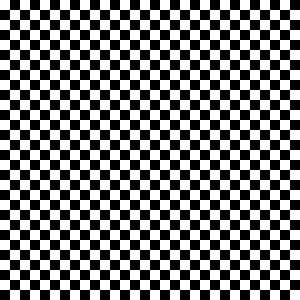
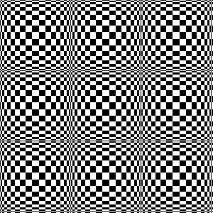

Figure 17.380. Example for the Checkerboard (legacy) filter

Filter applied

Psychobilly “Checkerboard (legacy)”
This filter creates a checkerboard pattern replacing the current layer content. Colors used for pattern are current Fore- and Back ground colors of toolbox.
![[Note]](images/note.png)
|
Note |
|---|---|
|
If the image is in indexed mode, this menu entry is disabled. |